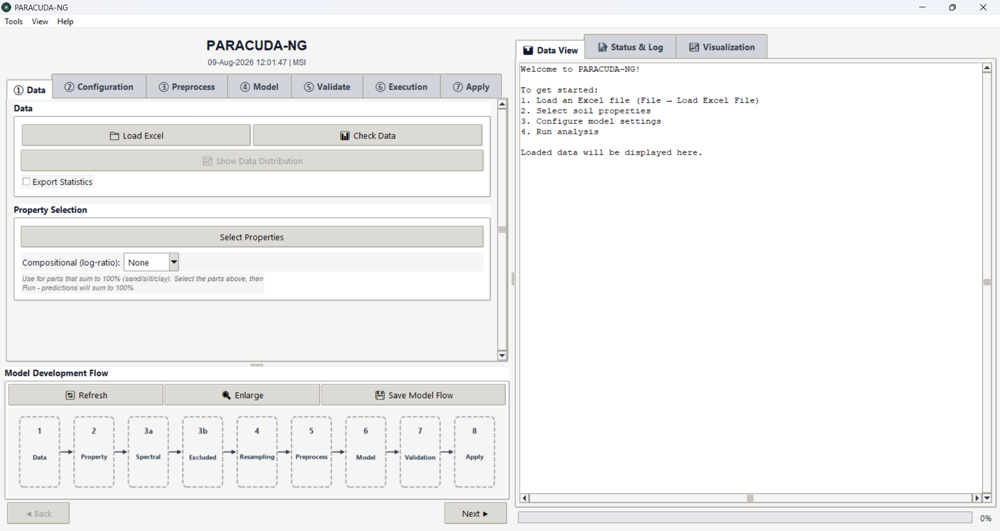
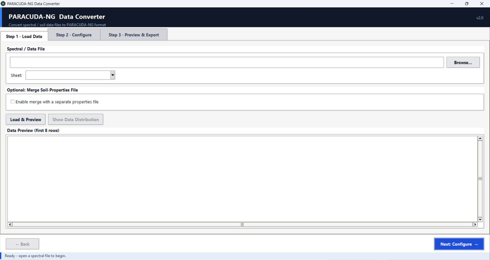

Free and open source
PARACUDA-NG
PARAmetric CUbe Data Analysis - Next Generation


PARACUDA-NG turns spectral measurements into calibrated prediction maps. It loads spectra from a spreadsheet, harmonises them to any sensor band configuration, trains and compares regression models, and applies the winner to a full multispectral or hyperspectral image cube. The whole workflow runs through a guided seven-step wizard, so no code is required, and the same scientific engine is importable when you do want to script it.
PARACUDA-NG runs where you already work: as a desktop application, as the
paracuda-ng Python package, and as a native dockable QGIS plugin.

- Version 1.0.0
- MIT licensed
- Python 3.9 and newer
- QGIS 3.22 and newer, including QGIS 4 on Qt6
- Windows, macOS and Linux
- 11 regression models
- 10 preprocessing methods
- 7 resampling methods
- 11 sensor presets
What PARACUDA-NG does today
Everything below ships in version 1.0.0 and behaves the same in all three distributions, because they share one scientific engine.
Guided seven-step workspace
Data, Configuration, Preprocess, Model, Validate, Execution and Apply are seven tabs you move through with Back and Next. Nothing is hidden behind a command line, and a live Model Development Flow diagram redraws itself from your current settings so you can always see the pipeline you have built. The diagram exports at 300 DPI for reports and papers.
Spectral data from any spreadsheet
Load .xlsx, .xls, .ods or .csv files.
Wavelength units are auto-detected, so a file in micrometres is recognised just
as reliably as one in nanometres, and the spectral domain (VSWIR, LWIR or both)
is inferred from the band range. Several target properties can be selected and
modelled in a single run. Reading runs off the interface thread behind a
progress dialog and picks the fastest reader available.
A Data Converter for arbitrary instrument layouts
Instruments rarely export the layout a modelling tool expects. The built-in three-step converter auto-detects row-wise or transposed column-wise files, resolves nm and micrometre units, optionally merges a separate file of measured properties, and writes out the standard PARACUDA-NG table. See Data Converter.
Data checks and a distribution report
Before committing to a model, inspect what you loaded. Check Data reports shape, ranges and missing values, Export Statistics writes a summary workbook, and the Data Distribution panel examines one property at a time with a histogram, a boxplot, a normal Q-Q plot, a cumulative distribution curve and a plain-language list of findings such as skew, outliers or a suspiciously narrow range.
Spectral configuration and wavelength exclusion
Restrict the analysis to a wavelength range, then drop the regions you do not trust. Type custom ranges, or use the one-click presets for water-absorption bands and noisy detector edges. The presets follow the selected spectral domain and merge into the omit list rather than stacking duplicates.
Band resampling and cross-sensor harmonisation
Seven resampling methods bring laboratory spectra onto a satellite or airborne band grid: Linear, Nearest-Neighbour, Quadratic and Cubic-Spline interpolation plus three bandwidth-aware methods, Gaussian SRF convolution, Empirical SRF integration and Band Averaging. Choose a sensor preset or supply your own band centres, per-band FWHM table or full spectral response functions. Band binning reduces a dense grid to a coarser one. See resampling reference.
Ten preprocessing methods
Smoothing (Savitzky-Golay), spectral outlier removal, continuum removal, baseline correction, first and second derivatives, absorbance, standard normal variate and multiplicative scatter correction, plus optional PCA dimensionality reduction inside the model pipeline. Missing-data strategies and target-outlier removal are configured alongside them. Find Best Preprocessing searches the options for you. See preprocessing reference.
Eleven regression models with automated tuning
PLS-R, SVM, Ridge, Lasso, Multiple Linear Regression, Elastic Net, Huber Regressor, Gradient Boosting, Gaussian Process, Random Forest and XGBoost, with an Artificial Neural Network (multi-layer perceptron) available as well. Every hyperparameter is editable, and Optuna searches the space for you when you would rather not tune by hand. PLS and PCA component counts can be optimised automatically. See model reference.
Cross-validation and overfitting detection
K-Fold, Leave-One-Out and Leave-P-Out strategies score every model on the original units of the property, not on scaled values. Train and test scores are compared automatically and an overfitting assessment is reported next to the metrics, so an implausibly good calibration does not slip through.
Batch mode with a best-model recommendation
Select several properties and several models and PARACUDA-NG trains the whole matrix in one run, then recommends the best model per property from R squared, RMSE and the cross-validation results. Results arrive as an Excel workbook with a comparison sheet per property and a multi-page PDF of plots: observed against predicted scatter plots, reflectance spectra and feature importance (importance bars for tree models, wavelength-correlation plots for the rest).
Compositional log-ratio modelling
Sand, silt and clay have to add up to 100 percent, and independent models do not respect that. Select the parts, choose ALR, CLR or ILR, and PARACUDA-NG models in log-ratio space and maps the predictions back so they sum to the total.
Apply to image cubes and to unknown tables
A trained model can predict a full image cube or a new spreadsheet of spectra.
GeoTIFF, ENVI (.dat, .bil, .bip,
.bsq with a .hdr), ERDAS Imagine .img,
NITF and PCIDSK are supported. Wavelengths and FWHM are recovered from the header,
gain and offset are applied so raw digital numbers become physical reflectance,
no-data and background pixels are masked instead of predicted, and large scenes
are streamed in chunks so memory stays flat. The prediction is written back in the
same format with georeferencing preserved.
Integrity and harmonisation tools
Check Spectral Integrity runs a label-permutation test and a spectral-mixing test to confirm that a good score reflects real spectral information rather than chance. Spectral Harmonization fits a PLS transfer function between two instruments so a model calibrated on one can be applied to the other.
Themes, help and portable models
Five colour themes (Ocean, Slate, Forest, Light-Contrast and Dark), a searchable
in-app Help Assistant covering 27 topics from loading data to interpreting
results, and a single .joblib model format that is interchangeable
between the desktop application, the Python package and the QGIS plugin.
Three ways to run it
All three distributions share the same preprocessing,
models, validation and utils packages. Only
the interface differs, and a model trained in one can be loaded in either of the
others.
Desktop application
A standalone Tkinter application. Best when you want the full workflow on a laptop with no other software installed. A one-click launcher sets up the Conda environment for you.
Python package
pip install paracuda-ng gives you the same window plus an
importable engine, bundled example data and two command-line entry points.
Best for scripted or reproducible work.
QGIS plugin
A native dockable Qt panel inside QGIS. Best when your imagery is already in a QGIS project: predict straight onto a loaded raster layer and get the result back as a new layer.
| Capability | Desktop | Python package | QGIS plugin |
|---|---|---|---|
| Seven-step wizard | Yes (Tkinter) | Yes (Tkinter) | Yes (Qt dock panel) |
| Full scientific engine | Yes | Yes | Yes (vendored) |
| Importable API | From the checkout | Yes, installed | From the QGIS console |
| Bundled example data | Sample Data folder | load_sample() | Sample Data folder |
| Predict on a file on disk | Yes | Yes | Yes |
| Predict on a loaded QGIS layer | No | No | Yes |
| Result added back to the map | No | No | Yes, with a colour map |
| Model file format | .joblib, interchangeable across all three | ||
| Install command | Clone plus requirements.txt | pip install paracuda-ng | Install from ZIP |
Getting started
Pick the distribution that matches how you work. Each tab below is self-contained.
Requires Python 3.9 or newer with Tkinter available. Tkinter ships with the
python.org and Conda installers; on Debian or Ubuntu install
python3-tk first.
pip install paracuda-ngThen open the window from Python or from the terminal:
import paracuda_ng
paracuda_ng() # the module itself is callableparacuda # same window, from the terminal
paracuda-converter # the standalone Data ConverterEverything the interface needs, including scikit-learn, XGBoost, Optuna and rasterio, is installed automatically as a dependency.
Requires QGIS 3.22 or newer. QGIS 4 on Qt6 is supported.
- Build the ZIP from the root of the
paracuda-qgis
repository, or download a released
paracuda_ng.zip:python tools/make_zip.py - In QGIS open Plugins → Manage and Install Plugins →
Install from ZIP and choose
dist/paracuda_ng.zip. - Enable PARACUDA-NG under Installed. The toolbar icon opens the dock panel.
- The first analysis offers to install the Python packages QGIS does not ship. Accept, or trigger it from Tools → Install Python dependencies.
Clone the repository, then either double-click the launcher or install the requirements yourself.
git clone https://github.com/sharadgupta27/paracuda-ng.git
cd paracuda-ng
pip install -r requirements.txt
python paracuda.pyOn Windows, run_paracuda.bat finds your Conda installation,
creates the paracuda environment on first use, and launches the
application. The only prerequisite is Miniforge, Miniconda or Anaconda.
Try it without your own data
Two example workbooks ship with the software: 598 soil samples with eight
measured properties and 16 spectral bands, plus 32 held-out samples for the
Apply step. In the Python package they are one call away with
paracuda_ng.load_sample(); the desktop and QGIS trees keep them in
the Sample Data folder.
Input data layout
PARACUDA-NG expects one row per sample in a single sheet. The first column holds the sample name, the next columns hold the measured properties, and the remaining column headers are the wavelengths:
| Names | Sand | Silt | Clay | pH | 450 | 500 | 550 | ... | 2400 |
|---|---|---|---|---|---|---|---|---|---|
| S001 | 42.1 | 31.4 | 26.5 | 7.8 | 0.081 | 0.094 | 0.112 | ... | 0.271 |
| S002 | 55.0 | 28.2 | 16.8 | 7.4 | 0.076 | 0.088 | 0.104 | ... | 0.258 |
- Wavelength headers may be in nanometres or micrometres. The unit is detected from the value range, and micrometres are converted to nanometres internally.
- Reflectance is expected in physical units, normally 0 to 1. Scaled integers in an image are converted automatically from the header gain and offset.
- Property columns can be any numeric measurement: soil texture, organic carbon, chlorophyll content, moisture, mineral abundance and so on.
- Any layout that does not look like this can be converted with the Data Converter.
The seven-step workflow
The tabs run left to right, and each step only asks for what the next one needs. You can move back at any time; the flow diagram updates as you go.
Step 1. Data
Load the spectra and choose what to model.
- Load Excel opens the spreadsheet or CSV and reports the number of samples, properties and bands in the log panel.
- Check Data summarises shape, ranges, missing values and the detected wavelength unit and spectral domain.
- Export Statistics writes descriptive statistics to a workbook.
- Select Properties picks one or more target columns. Selecting more than one switches the run into batch mode.
- Compositional (log-ratio) is set here when the selected parts sum to a fixed total. Choose ALR, CLR or ILR and predictions are returned on the original scale, summing back to 100 percent.
Step 2. Configuration
Decide which part of the spectrum the model sees and on which band grid.
- Wavelength range trims the analysis to a minimum and maximum.
- Omit ranges removes regions you do not trust. Enter ranges such
as
1350-1450, 1800-1950or apply the water-absorption and noisy-edge presets, which adapt to the detected spectral domain. - Resampling selects a sensor preset or a custom grid, and one of the seven methods. The bandwidth-aware methods need per-band FWHM, which is either taken from the preset, estimated from band spacing, or uploaded as a CSV.
- Spectral response functions can be uploaded for Empirical SRF resampling when you have measured response curves.
- Binning keeps one representative band per group when the grid is denser than the model needs.
Step 3. Preprocess
Choose a single method, or let Find Best Preprocessing compare them. Missing-data handling and target-outlier removal are configured on this tab as well. Fitted transforms, notably multiplicative scatter correction, store their reference spectrum inside the saved model so prediction reproduces training exactly. See the preprocessing reference.
Step 4. Model
- Pick one model, or tick several for a batch comparison.
- Every hyperparameter is editable, with sensible defaults filled in.
- Optuna tuning searches the space automatically. The search space used for each model is shown before the run and stored with the results.
- Component optimisation scans PLS or PCA component counts and keeps the best.
- Optional PCA dimensionality reduction can be inserted ahead of the regressor.
Step 5. Validate
- K-Fold with a configurable fold count and optional shuffling.
- Leave-One-Out for small datasets.
- Leave-P-Out when you want to hold out groups of samples.
Scores are computed on the original units of the property, so an RMSE in percent clay stays in percent clay. Component counts are clamped to the smallest training fold so a valid full-data setting cannot make individual folds fail.
Step 6. Execution
Run the analysis. Progress is reported in the status log, and long tasks run on a background thread so the window stays responsive. When the run finishes you get:
- An Excel workbook with per-model and per-property comparison sheets.
- A multi-page PDF with observed against predicted scatter plots, reflectance spectra and feature-importance charts.
- A best-model recommendation per property, with an overfitting assessment.
- A saved
.joblibmodel. The model file, the Excel report and the PDF share one run timestamp so they stay matched.
Step 7. Apply
Use a saved model on new data.
- Unknown table: load a spreadsheet of spectra without measured properties and get a workbook of predictions.
- Image cube: load a multispectral or hyperspectral image and predict pixel by pixel. In QGIS, pick a raster layer that is already loaded and the prediction is added back to the map with a matching colour map.
- Export the resampled cube to confirm that harmonisation produced sensible spectra before you trust the prediction.
The saved model carries its own band grid, exclusion ranges, resampling configuration and preprocessing parameters, so incoming data is aligned to exactly what the model was trained on, whatever grid it arrives on.
Data Converter
Reachable from Tools → Data Converter, from the
paracuda-converter command, or by running
utils/data_converter.py in the desktop checkout. It is a three-step
wizard: Load Data, Configure, Preview and Export.
- Detects whether samples run along rows or along columns and transposes when needed.
- Finds the wavelength header row or column, in nanometres or micrometres.
- Optionally merges a second file holding the measured properties, matched on the sample name.
- Previews the result before writing, then exports the standard
Names | Prop1 ... PropN | WL1 ... WLMtable.

paracuda-converter # installed with the Python package
python -m paracuda_ng.utils.data_converter # same wizard, as a module
python utils/data_converter.py # from the desktop checkoutExtra tools
Check Spectral Integrity
A good R squared is not proof that the model learned anything spectral. This suite runs two tests. The label-permutation test refits the model many times on deliberately shuffled targets: if the shuffled scores approach your real score, the result is chance. The spectral-mixing test replaces a fraction of the spectra with mixtures and checks that performance degrades the way genuine spectral information should. Both produce a plot and a written verdict.
Spectral Harmonization
Fits a PLS transfer function between spectra of the same samples measured on two instruments, so a model calibrated on the source instrument can be applied to the target. The transfer function is saved and reloaded like a model.
Data Distribution
Examines one property at a time from a drop-down: histogram, boxplot, normal Q-Q plot, cumulative distribution and a findings list that flags skew, heavy tails, outliers and narrow ranges before they quietly ruin a calibration.
Help Assistant
A searchable knowledge base built into the application, covering 27 topics including choosing a model, compositional modelling, preprocessing options, cross-validation, image processing, overfitting detection, interpreting results and best practices for spectral modelling. Search by keyword and related topics are suggested alongside the answer.
Python package
Distribution name paracuda-ng, import name paracuda_ng,
version 1.0.0, MIT licensed.
Installation
pip install paracuda-ngFrom a clone of the repository instead:
pip install .An optional accelerator installs a Rust reader that parses large spectral workbooks several times faster than the default engine:
pip install "paracuda-ng[fast]"Dependencies pulled in automatically: NumPy, pandas, SciPy, scikit-learn, matplotlib, joblib, XGBoost, Optuna, rasterio, spectral, Pillow, openpyxl, xlrd and odfpy. Tkinter comes from the standard library.
Opening the window
import paracuda_ng
paracuda_ng() # the module itself is callableEquivalent forms:
from paracuda_ng import launch
launch()
import paracuda_ng
paracuda_ng.launch()From a terminal:
paracuda # main application
paracuda-converter # standalone Data Converter wizard
python -m paracuda_ng # run the package as a moduleThe window class is importable for scripted or headless use:
from paracuda_ng import Paracuda
app = Paracuda()
app.mainloop()Bundled example data
Two workbooks install with the package, so there is nothing to download before trying PARACUDA-NG. They double as a reference for the expected input layout.
import paracuda_ng
sample = paracuda_ng.load_sample() # DataFrame: 598 soil samples, 25 columns
paracuda_ng.view(sample) # opens it in your spreadsheet program
paracuda_ng.load_sample("unknown") # 32 held-out samples, for the Apply step
paracuda_ng.list_samples() # ['sample', 'unknown']
paracuda_ng.sample_path() # full path, to load through the windowBoth sets contain the sample name, eight measured soil properties (Sand, Silt, Clay, BD, pH, CaCO, OC and CarbonStock) and 16 spectral bands.
view() also accepts a DataFrame of your own or an existing path:
paracuda_ng.view(my_dataframe) # written to a temporary workbook and opened
paracuda_ng.view("results.xlsx") # open an existing file
paracuda_ng.view() # opens the bundled sampleTop-level API
| Name | What it does |
|---|---|
paracuda_ng() | Open the window. The module is callable. |
launch() | Open the window and run until it is closed. Returns the instance. |
main() | Entry point behind the paracuda command. |
Paracuda | The main window class, imported lazily so Tk is not required to import the package. |
load_sample(name="sample") | Bundled workbook as a DataFrame. |
sample_path(name="sample") | Path to a bundled workbook. |
list_samples() | Names of the bundled workbooks. |
view(obj=None) | Open a DataFrame, a path, or the bundled sample in a spreadsheet program. |
__version__ | Package version string. |
Importing is cheap
import paracuda_ng does not pull in Tk, scikit-learn or SciPy. Those
arrive only when you open the window or call into the modelling modules, which
keeps the package usable in scripts and notebooks that never draw an interface.
Python scripting recipes
The engine behind the wizard is plain Python and is importable directly. Every snippet below runs against the bundled sample data.
Load spectra and split the columns
import numpy as np
import paracuda_ng
df = paracuda_ng.load_sample()
# Wavelength columns are the ones whose header is a number.
wl_cols = [c for c in df.columns if str(c).replace(".", "", 1).isdigit()]
wavelengths = np.array([float(c) for c in wl_cols])
X = df[wl_cols].to_numpy(dtype=float)
y = df["Clay"].to_numpy(dtype=float)
print(X.shape, wavelengths.min(), wavelengths.max())Resample to a sensor band grid
from paracuda_ng.preprocessing.data_processing import (
SENSOR_OPTIONS, get_sensor_bands, resample_spectra,
)
print(SENSOR_OPTIONS)
# ['Custom', 'Sentinel-2', 'Landsat-5', 'Landsat-7', 'Landsat-8', 'Landsat-9',
# 'VENUS', 'PlanetScope', 'DESIS', 'EnMAP', 'EMIT', 'PRISMA']
centers, fwhms = get_sensor_bands("Sentinel-2")
# Bandwidth-aware resampling needs the per-band FWHM.
X_s2 = resample_spectra(X, wavelengths, centers,
method="Gaussian SRF", fwhms=fwhms)
# Plain interpolation does not.
X_lin = resample_spectra(X, wavelengths, centers, method="Linear Interpolation")Preprocess spectra
from paracuda_ng.preprocessing.data_processing import (
PREPROCESS_METHODS, preprocess_spectra,
)
print(PREPROCESS_METHODS)
X_cr = preprocess_spectra(X, "Continuum Removal")
X_d1 = preprocess_spectra(X, "First Derivative")
X_sg = preprocess_spectra(X, "Smoothing", window_length=11, polyorder=2)
X_snv = preprocess_spectra(X, "SNV") # acronyms are acceptedTrain a model and score it
from sklearn.model_selection import train_test_split
from sklearn.preprocessing import StandardScaler
from paracuda_ng.models.model_training import create_model
from paracuda_ng.models.batch_processing import compute_metrics, rpd_quality
X_train, X_test, y_train, y_test = train_test_split(
X, y, test_size=0.3, random_state=42)
scaler_X = StandardScaler().fit(X_train)
scaler_y = StandardScaler().fit(y_train.reshape(-1, 1))
model = create_model("PLS-R", {"n_components": 8})
model.fit(scaler_X.transform(X_train),
scaler_y.transform(y_train.reshape(-1, 1)).ravel())
pred_scaled = model.predict(scaler_X.transform(X_test)).reshape(-1, 1)
pred = scaler_y.inverse_transform(pred_scaled).ravel()
metrics = compute_metrics(y_test, pred)
print("R2 ", round(metrics["r2"], 3))
print("RMSE ", round(metrics["rmse"], 3))
print("RPD ", round(metrics["rpd"], 2), rpd_quality(metrics["rpd"]))
print("nRMSEP %", round(metrics["nrmsep"], 2))Cross-validate
from paracuda_ng.validation.cross_validation import perform_cross_validation
rmse_scores, r2_scores, rmse_mean, r2_mean, rmse_std, r2_std = perform_cross_validation(
scaler_X.transform(X_train),
scaler_y.transform(y_train.reshape(-1, 1)).ravel(),
create_model("PLS-R", {"n_components": 8}),
"K-Fold", # or "Leave-One-Out", "Leave-P-Out"
{"k_folds": 5, "shuffle": True},
scaler_y,
n_jobs=1,
)
print(f"CV R2 {r2_mean:.3f} +/- {r2_std:.3f}")
print(f"CV RMSE {rmse_mean:.3f} +/- {rmse_std:.3f}")Tune hyperparameters with Optuna
from paracuda_ng.models.hyperparameter_tuning import (
tune_hyperparameters, format_search_space,
)
base_params = {"n_estimators": 300, "max_depth": "None", "min_samples_split": 2,
"min_samples_leaf": 1, "max_features": "sqrt", "bootstrap": True}
print(format_search_space("Random Forest",
n_features=X.shape[1], n_samples=X.shape[0]))
best_params, best_rmse, study, message = tune_hyperparameters(
"Random Forest", base_params,
scaler_X.transform(X_train),
scaler_y.transform(y_train.reshape(-1, 1)).ravel(),
n_trials=30, cv_folds=3,
)
print(message, best_params, best_rmse)
tuned = create_model("Random Forest", {**base_params, **best_params})Compositional modelling
import numpy as np
from paracuda_ng.preprocessing import compositional
parts = df[["Sand", "Silt", "Clay"]].to_numpy(dtype=float)
coords = compositional.forward(parts, "CLR") # or "ALR", "ILR"
# ... fit one model per coordinate, predict, then map back ...
back = compositional.inverse(coords, "CLR", total=100.0)
print(np.allclose(back.sum(axis=1), 100.0)) # TrueApply a saved model to an image cube
import joblib
from paracuda_ng.utils.image_processing import (
read_geospatial_image, process_image_for_prediction, save_prediction_image,
)
bundle = joblib.load("Clay_PLS-R_20260808.joblib")
# Physical reflectance, gain and offset applied, no-data turned into NaN.
data, profile, img_wavelengths, img_fwhms, info = read_geospatial_image("scene.dat")
scaled, shape, valid_mask, cube, target_wl = process_image_for_prediction(
data, img_wavelengths,
bundle["preprocessing"],
bundle["scaler_X"],
bundle["filtered_wavelengths"],
new_wavelengths=bundle["new_wavelengths"],
preprocess_kwargs=bundle["preprocessing_kwargs"],
resample_method=bundle["resample_method"],
new_fwhms=bundle["new_fwhms"],
srf_table=bundle["srf_table"],
nodata=profile.get("nodata"),
return_cube=False,
)
pred_scaled = bundle["model"].predict(scaled).reshape(-1, 1)
pred = bundle["scaler_y"].inverse_transform(pred_scaled).ravel()
save_prediction_image(pred, shape, profile, "clay_prediction.tif",
band_name="Predicted Clay", valid_mask=valid_mask)Large scenes
For a full hyperspectral scene, pass a predict_fn to
process_image_for_prediction. Predictions are then computed inside
the chunk loop and only a single prediction vector is held in memory, instead of
the complete scaled matrix. A 13 million pixel scene with 1787 bands is roughly
89 GiB as a scaled matrix and roughly 54 MB as a prediction vector.
def predict_chunk(block):
scaled_pred = bundle["model"].predict(block).reshape(-1, 1)
return bundle["scaler_y"].inverse_transform(scaled_pred).ravel()
pred, shape, valid_mask, cube, target_wl = process_image_for_prediction(
data, img_wavelengths,
bundle["preprocessing"], bundle["scaler_X"], bundle["filtered_wavelengths"],
new_wavelengths=bundle["new_wavelengths"],
preprocess_kwargs=bundle["preprocessing_kwargs"],
resample_method=bundle["resample_method"],
new_fwhms=bundle["new_fwhms"],
nodata=profile.get("nodata"),
return_cube=False,
chunk_pixels=100_000,
predict_fn=predict_chunk,
)Run the integrity tests
from paracuda_ng.preprocessing.data_processing import (
randomize_label_test, mix_spectra_integrity_check,
spectral_transfer_function, apply_transfer_function,
)
# Does the score survive shuffled labels? It should not.
result = randomize_label_test(X, y, n_permutations=100, n_components=5, cv=5)
# Does performance degrade the way real spectral information should?
mixed = mix_spectra_integrity_check(X, y, mix_fraction=0.2, random_seed=42)
# Harmonise one instrument to another, then apply the transfer function.
pls, scaler_s, scaler_t = spectral_transfer_function(X_source, X_target, n_components=5)
X_harmonised = apply_transfer_function(X_new, pls, scaler_s, scaler_t)QGIS plugin
The plugin is the same seven-step wizard rewritten in Qt and docked inside QGIS. The scientific backend is vendored into the plugin folder, so it installs standalone: QGIS copies the plugin into your user profile and nothing else has to be on the path.
Requirements
- QGIS 3.22 or newer. QGIS 4 on Qt6 is supported.
- Six Python packages QGIS does not ship: scikit-learn, joblib, optuna, xgboost, rasterio and spectral.
The first time you run an analysis, PARACUDA-NG offers to install the missing ones
into the QGIS Python environment with pip --user. You can also trigger
it any time from Tools → Install Python dependencies.
Install from ZIP
python tools/make_zip.py # uses the sibling ../paracuda-ng checkout
python tools/make_zip.py /path/to/paracuda-ng # explicit backend source
python tools/make_zip.py --no-sync # paracuda_ng/ is already current
The result is dist/paracuda_ng.zip. In QGIS open
Plugins → Manage and Install Plugins → Install from ZIP,
choose that file, then enable PARACUDA-NG under Installed.
The toolbar icon opens the dock panel.
Install for development
Copy or symlink the paracuda_ng/ folder into the QGIS plugin directory:
%APPDATA%\QGIS\QGIS3\profiles\default\python\plugins\ # QGIS 3
%APPDATA%\QGIS\QGIS4\profiles\default\python\plugins\ # QGIS 4
Refresh the vendored backend first so it matches the desktop checkout, which is
expected as a sibling ../paracuda-ng directory:
python tools/sync_backend.py
python tools/sync_backend.py /path/to/paracuda-ng
export PARACUDA_DESKTOP=/path/to/paracuda-ng # or set it in the environmentRestart QGIS and enable the plugin.
Using the panel
-
Data
Load an Excel or CSV file of spectra, then choose the properties to model.
-
Configuration and Preprocess
Set the spectral domain, the resampling grid, the exclusion ranges and the preprocessing method.
-
Model and Validate
Pick a model or a batch of models, optional Optuna tuning, and a cross-validation strategy.
-
Execution
Run to produce the Excel report and the PDF plots. The best model is saveable from the same screen.
-
Apply
Save the model, then predict on a raster layer that is already loaded in the project. The prediction is added back to the map as a new layer with a matching colour map.
Why QGIS stays responsive
Long tasks run on a background thread with a threading parallel backend, so
worker parallelism never spawns extra QGIS processes. Model files use the same
.joblib format as the desktop tool, so models move freely between
them.
QGIS console recipes
QGIS puts the plugin directory on sys.path, so the vendored engine is
importable straight from the Plugins → Python Console. These
snippets are useful for batch jobs and for Processing scripts.
Import the engine
from paracuda_ng.preprocessing.data_processing import (
get_sensor_bands, resample_spectra, preprocess_spectra,
)
from paracuda_ng.models.model_training import create_model
from paracuda_ng.models.batch_processing import compute_metrics
from paracuda_ng.utils.image_processing import (
read_geospatial_image, process_image_for_prediction, save_prediction_image,
)Predict on the active raster layer
import joblib
from qgis.core import QgsProject, QgsRasterLayer
from qgis.utils import iface
from paracuda_ng.utils.image_processing import (
read_geospatial_image, process_image_for_prediction, save_prediction_image,
)
layer = iface.activeLayer() # a raster layer selected in the panel
source = layer.dataProvider().dataSourceUri()
bundle = joblib.load("Clay_PLS-R_20260808.joblib")
data, profile, wavelengths, fwhms, info = read_geospatial_image(source)
def predict_chunk(block):
scaled = bundle["model"].predict(block).reshape(-1, 1)
return bundle["scaler_y"].inverse_transform(scaled).ravel()
pred, shape, valid_mask, cube, target_wl = process_image_for_prediction(
data, wavelengths,
bundle["preprocessing"], bundle["scaler_X"], bundle["filtered_wavelengths"],
new_wavelengths=bundle["new_wavelengths"],
preprocess_kwargs=bundle["preprocessing_kwargs"],
resample_method=bundle["resample_method"],
new_fwhms=bundle["new_fwhms"],
nodata=profile.get("nodata"),
return_cube=False,
predict_fn=predict_chunk,
)
out_path = "/tmp/clay_prediction.tif"
save_prediction_image(pred, shape, profile, out_path,
band_name="Predicted Clay", valid_mask=valid_mask)
result = QgsRasterLayer(out_path, "Predicted Clay")
QgsProject.instance().addMapLayer(result)Batch over every raster in the project
from qgis.core import QgsProject, QgsRasterLayer
for name, layer in QgsProject.instance().mapLayers().items():
if not isinstance(layer, QgsRasterLayer):
continue
source = layer.dataProvider().dataSourceUri()
print("Predicting", layer.name(), "from", source)
# ... reuse the prediction block above, writing one output per layer ...Check the band grid first
A model trained on 16 laboratory bands can only be applied to imagery that covers the same wavelength range. PARACUDA-NG resamples the image onto the model grid automatically, but if the image does not overlap the training range at all, the prediction is meaningless. Export the resampled cube once and look at the spectra before trusting a new sensor.
Desktop application
The desktop build is the reference implementation: a standalone Tkinter application with no QGIS and no packaging step in the way.
One-click launcher
If installing packages from a terminal is not how you want to spend your day,
double-click run_paracuda.bat. It:
- Finds your Conda installation (Miniforge, Miniconda or Anaconda).
- Creates the
paracudaenvironment and installs everything fromrequirements.txtthe first time, which takes a few minutes. - Activates the environment and launches PARACUDA-NG.
The only prerequisite is a Conda installation. If Conda cannot be found or setup fails, the launcher prints clear guidance and stays open so you can read it.
Manual install
pip install -r requirements.txt
python paracuda.pyThemes
Five colour themes are available from View → Theme: Ocean, Slate, Forest, Light-Contrast and Dark. The Model Development Flow diagram follows the active theme and exports at 300 DPI.
Reference
Regression models
| Model | Key parameters | Good for |
|---|---|---|
| PLS-R | n_components (1 to 50, optimisable) | The chemometrics default. Many correlated bands, few samples. |
| SVM (SVR) | kernel, C, gamma, epsilon, degree | Non-linear relationships, moderate sample counts. |
| Ridge | alpha, solver, max_iter | A regularised linear baseline. |
| Lasso | alpha, max_iter, selection, tol | Sparse band selection. |
| Multiple Linear Regression | fit_intercept | A reference point on few, uncorrelated features. |
| Elastic Net | alpha, l1_ratio, max_iter, tol | Between Ridge and Lasso. |
| Huber Regressor | epsilon, alpha, max_iter | Targets with outliers you cannot remove. |
| Gradient Boosting | n_estimators, learning_rate, max_depth, subsample | Strong non-linear fits on larger datasets. |
| Gaussian Process | length_scale, alpha, n_restarts_optimizer | Small datasets where uncertainty matters. |
| Random Forest | n_estimators, max_depth, max_features, bootstrap | Robust default, gives feature importance. |
| XGBoost | n_estimators, max_depth, learning_rate, subsample, colsample_bytree, reg_alpha, reg_lambda | The usual winner on large tabular datasets. |
| Artificial Neural Network | hidden_layer_sizes, activation, solver, alpha, early_stopping | Non-linear fits when you have plenty of samples. |
| PCA | n_components, svd_solver, whiten | Optional dimensionality reduction ahead of a regressor. |
Tree-based models report importance bars; the others get wavelength-correlation plots so you can still see which regions drive the prediction.
Preprocessing methods
| Method | Parameters | What it corrects |
|---|---|---|
| No Preprocessing | none | Raw reflectance, the baseline to compare against. |
| Smoothing | window_length, polyorder | Savitzky-Golay filtering of instrument noise. |
| Spectral Outlier Removal | outlier_method (zscore or iqr), threshold | Drops whole spectra that sit far from the population. |
| Continuum Removal | none | Isolates absorption features from the overall shape. |
| Baseline Correction | baseline_method, degree | Removes a slowly varying baseline. |
| First Derivative | none | Removes additive offsets, sharpens features. |
| Second Derivative | none | Removes additive and multiplicative baseline drift. |
| Absorbance | none | Converts reflectance to log(1/R). |
| Standard Normal Variate (SNV) | none | Scatter correction per spectrum. |
| Multiplicative Scatter Correction (MSC) | fitted reference spectrum | Scatter correction against the training mean. The reference is stored inside the saved model. |
The acronyms SNV and MSC are accepted wherever the full
names are, so older configuration files keep working.
Resampling methods
| Method | Needs FWHM | Notes |
|---|---|---|
| Linear Interpolation | No | The default. Fast and predictable. |
| Nearest Neighbour Interpolation | No | Keeps sharp absorption features that linear interpolation would smear across a coarse grid. |
| Quadratic Interpolation | No | Smoother than linear on dense grids. |
| Cubic Spline | No | Smoothest interpolation, can overshoot near sharp features. |
| Gaussian SRF | Yes | Analytic Gaussian response, sigma = FWHM / 2.3548, integrated over plus or minus three sigma. |
| Empirical SRF | Yes | Integrates against uploaded per-band response curves, falling back to the Gaussian response where no curve is supplied. |
| Band Averaging | Yes | Flat top-hat response across each band's FWHM window. |
Where a sensor preset provides no explicit FWHM, per-band values are estimated from the local band spacing, so the bandwidth-aware methods still work.
Sensor band presets
| Sensor | Type | Bands used |
|---|---|---|
| Sentinel-2 (MSI) | Multispectral | Published reflective band centres with their FWHM. No thermal channels. |
| Landsat-5 (TM) | Multispectral | Reflective bands B1 to B5 and B7 with FWHM, thermal B6 available separately. |
| Landsat-7 (ETM+) | Multispectral | Reflective bands B1 to B5 and B7 with FWHM, thermal B6 available separately. |
| Landsat-8 (OLI/TIRS) | Multispectral | Coastal, blue, green, red, NIR and SWIR bands with FWHM, thermal available separately. |
| Landsat-9 (OLI-2) | Multispectral | Spectrally identical to Landsat-8. |
| VENUS | Multispectral | Twelve published band centres. The preset key is spelled VENUS. |
| PlanetScope (SuperDove) | Multispectral | Eight VNIR bands. |
| DESIS | Hyperspectral | 235 VNIR bands from about 402 to 999 nm. |
| EnMAP | Hyperspectral | Nominal VNIR and SWIR band centres. |
| EMIT | Hyperspectral | Nominal band centres. |
| PRISMA | Hyperspectral | 239 bands on the nominal 10 nm grid from about 402 to 2497 nm. |
| Custom | Either | Your own centres, FWHM table or full SRF curves, uploaded as CSV. |
Thermal bands are excluded by default so that VIS-NIR-SWIR datasets are not polluted by channels the spectra do not cover.
Metrics
| Metric | Meaning |
|---|---|
r2 | Coefficient of determination on the original units. |
rmse / rmsep | Root mean squared error. The second name is the chemometrics convention for the test split. |
mae | Mean absolute error. |
rpd | Ratio of performance to deviation, with a quality label attached. |
nrmsep | RMSE as a percentage of the observed range. |
nrmsep_mean | RMSE as a percentage of the observed mean. |
Train and test scores are compared automatically and an overfitting assessment is reported alongside them, using the train and test R squared, the RMSE pair and the cross-validated R squared.
Image formats
| Format | Extensions | Spectral metadata |
|---|---|---|
| GeoTIFF | .tif, .tiff | Per-band scale and offset from GDAL. |
| ENVI | .dat, .bil, .bip, .bsq with .hdr | Wavelengths, FWHM, gain, offset, no-data and band interleave read from the header. |
| ERDAS Imagine | .img | Georeferencing preserved. |
| NITF | .ntf | Read and write through GDAL. |
| PCIDSK | .pix | Read and write through GDAL. |
The prediction is written with the driver implied by the output path, defaulting to the input driver, and with a clean single-band header: georeferencing is preserved while multi-band spectral metadata is dropped, because the output is a derived one-band product.
Output files
| File | Contents |
|---|---|
| Excel report | Per-model and per-property sheets with metrics, parameters, the tuning search space and the cross-validation results. |
| PDF plot report | Observed against predicted scatter plots, reflectance spectra and feature importance, one page per figure. |
.joblib model | The fitted model, both scalers and the complete spectral configuration. |
| Prediction image | Single-band map in the input format, background and no-data pixels written as the no-data value. |
| Resampled cube | Optional export of the harmonised image or tabular spectra, for verification. |
| Unknown predictions | Workbook of predictions for a table of samples with no measured properties. |
| Model Development Flow | The pipeline diagram, exported at 300 DPI. |
The model file, the Excel report and the PDF from one run share a single timestamp, so a folder of results never gets mismatched.
What a saved model contains
A .joblib file is a dictionary. Loading it with
joblib.load() gives you everything needed to reproduce a prediction:
| Key | Contents |
|---|---|
model | The fitted estimator. |
scaler_X, scaler_y | The fitted standard scalers. |
pca_component | The fitted PCA step, when one was used. |
wavelengths | Every wavelength in the training file. |
filtered_wavelengths | Wavelengths left after range and exclusion filtering. |
new_wavelengths, new_fwhms | The resampled band grid, when resampling was enabled. |
training_input_wavelengths | The grid the scaler actually expects. |
resample_method, resample_sensor, resample_spacing, resampling_enabled | The full resampling configuration. |
srf_table, custom_fwhm_table | Uploaded response curves or bandwidths. |
exclude_ranges | The omitted wavelength ranges. |
preprocessing, preprocessing_kwargs | The training preprocessing method and its parameters, including any fitted reference spectrum. |
model_type, model_parameters | The model name and its hyperparameters. |
selected_property | The property the model predicts. |
Project structure
| Path | Contents |
|---|---|
preprocessing/ | Spectral preprocessing, resampling, sensor presets, compositional transforms, integrity tests. |
models/ | Model construction, Optuna tuning, batch processing, metrics and plots. |
validation/ | Cross-validation strategies and derived metrics. |
utils/ | File I/O, the Data Converter, image processing, distribution reports and the Help Assistant. |
gui/ | The Tkinter window, composed from mixins (desktop and Python package). |
gui_qt/ | The Qt dock panel (QGIS plugin only). |
paracuda_theme.py | Shared colour themes. |
tools/ | sync_backend.py and make_zip.py (QGIS plugin repository). |
docs/ | This website, published with GitHub Pages. |
Troubleshooting
The window does not open on Linux
Tkinter is part of the standard library but some Linux distributions package it separately. On Debian or Ubuntu:
sudo apt install python3-tkQGIS reports a missing package
Use Tools → Install Python dependencies inside the plugin. It
installs scikit-learn, joblib, optuna, xgboost, rasterio and spectral into the QGIS
Python environment with pip --user. If your QGIS install is managed and
pip is blocked, install them into the environment QGIS uses instead.
The prediction image looks empty
This is almost always a scaling problem. Products that store integer digital
numbers carry a gain and offset in the header, for example
data gain values = 0.0001 so a value of 3000 means a reflectance of
0.3. PARACUDA-NG applies that automatically, but if a header is missing or wrong,
the model sees values far outside its training range and every pixel ends up masked
or nonsensical. Check the header, then export the resampled cube and inspect a few
spectra.
A photo is rejected as an image cube
JPEG and PNG photos are not geospatial rasters and are refused deliberately. Load a
multispectral or hyperspectral cube: GeoTIFF, ENVI with a .hdr,
.img, .bil, .bip, .bsq or
.dat.
A component count error during cross-validation
PLS and PCA require the component count to be no larger than the smallest training fold. A setting that is valid on the full dataset can still overflow an individual fold. PARACUDA-NG clamps the count to the smallest fold automatically, so if you still see an error, reduce the fold count or the component count.
The score looks too good
Run Check Spectral Integrity. If shuffled labels reach a similar score, the model is fitting noise rather than spectral information. Also read the overfitting assessment printed next to the metrics: a large gap between the training and test R squared is the usual warning sign.
Loading a large workbook is slow
Install the optional fast reader. It parses large spectral workbooks several times faster, and PARACUDA-NG falls back to the default engine when it is absent.
pip install "paracuda-ng[fast]"A hyperspectral scene runs out of memory
Use the chunked prediction path shown in
Apply a saved model to an image cube, pass
return_cube=False unless you actually need the resampled cube, and
lower chunk_pixels if memory is very tight.
Project status
PARACUDA-NG 1.0.0 is stable and in active development. The desktop application, the Python package and the QGIS plugin are released together and share one scientific engine, so a fix in one reaches all three.
What ships today
- The full seven-step wizard in Tkinter and in Qt6, with the live Model Development Flow diagram exportable at 300 DPI.
- Excel, CSV and OpenDocument input, with wavelength unit and spectral domain auto-detection, and a converter for arbitrary instrument layouts.
- Ten preprocessing methods, seven resampling methods, eleven sensor presets, custom FWHM and SRF upload, band binning and exclusion presets.
- Eleven regression models plus a neural network and optional PCA, single or batch runs, Find Best Preprocessing, Optuna tuning and component optimisation.
- K-Fold, Leave-One-Out and Leave-P-Out cross-validation with overfitting detection and an automatic best-model recommendation.
- Compositional CLR, ALR and ILR modelling for parts that sum to a fixed total.
- Prediction on unknown tables, on image cubes in five geospatial formats, and on QGIS raster layers with the result added back to the map.
- Check Spectral Integrity, Spectral Harmonization, Data Distribution and a searchable Help Assistant.
- Excel and PDF reporting with a shared run timestamp, and a portable
.joblibmodel format. - Five colour themes across all three distributions.
Recently added in 1.0.0
- First QGIS plugin release: the full wizard as a native dockable Qt6 panel for QGIS 3.22 and QGIS 4.
- Apply a trained model to a loaded QGIS raster layer and get the prediction back as a new layer with a matching colour map.
- Sensor resampling for Sentinel-2, Landsat 5, 7, 8 and 9, EnMAP, EMIT, PRISMA, DESIS, PlanetScope and VENUS, plus custom FWHM and SRF grids and band binning.
- Data loading moved off the interface thread behind a progress dialog, using the fastest available reader, roughly halving the time to open a large spreadsheet.
- Data Distribution now inspects one property at a time from a drop-down, with a histogram, boxplot, normal Q-Q plot, cumulative distribution and findings.
- Noisy-edge and water-band exclusion presets follow the selected spectral domain (VSWIR, LWIR or both) and merge into the omit field instead of stacking duplicates.
- Automatic first-run installation of the required Python packages inside QGIS.
Issues and contributions
Bug reports and feature requests for the desktop application and the Python package go to the paracuda-ng tracker, and anything specific to the plugin to the paracuda-qgis tracker. The code is MIT licensed, so pull requests, forks and derivative work are all welcome.
Citation and license
Citing PARACUDA-NG
If you use this software in your research, please cite it:
@software{ParacudaNG2026,
author = {Sharad Kumar Gupta},
title = {PARACUDA-NG: An Open-Source Machine Learning tool for Spectroscopic Analysis},
year = {2026},
url = {https://github.com/sharadgupta27/paracuda-ng}
}Acknowledgement
PARACUDA-NG takes its inspiration from the PARACUDA tool (based on Excel) developed by Schwartz et al. (2013) and and PARACUDA II (MATLAB) by Carmon and Ben-Dor (2017).
1. Schwartz, G. (2013). Reflectance Spectroscopy as a Rapid Tool for Quantitative Mapping of Hydrocarbons Soil Contamination (PhD dissertation). The Porter School of Environmental Studies, Tel Aviv University. Supervised by Prof. Eyal Ben-Dor and Dr. Gil Eshel.
2. Carmon, N., and Ben-Dor, E. (2017). An advanced analytical approach for spectral-based modelling of soil properties. International Journal of Emerging Technologies and Advanced Engineering, 7, 90-97.
License
PARACUDA-NG is released under the MIT License in all three distributions. Commercial use is permitted; keeping the copyright notice is all that is required.
Contact
Sharad Kumar Gupta, sharadgupta27@gmail.com. For collaboration or support enquiries, please get in touch.